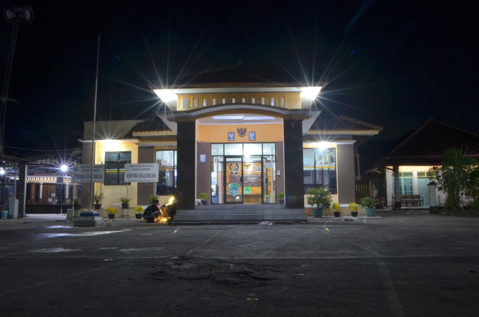

Sejarah Desa
Diceritakan oleh seorang tokoh masyarakat desa Leuwikujang yaitu Alm. Bapak Lebe Zaenudin semasa hidupnya bahwa pada bad Ke-17 ada pendukuhan kecil dibawah gunung sebut saja DUKUH LEUWIBADAK yang merupakan cikal bakal terbentuknya desa Leuwikujang yang saat ini merupakan wilayah bagian dari kekuasaan kerajaan islam Cirebon. Seiring dengan perkembangan penduduk dukuh tersebut telah memenuhi syarat untuk dibentuk desa salah satu syarat diantaranya harus ada balai pertemuan atau tempat musyawarah dan masjid untuk sarana tempat ibadah. Saat itu yang menjadi kepala kampung atau yang dipertua adalah “KI BUYUT SANGGAN”.
Ketika Ki Buyut Sanggan turun gunung hendak mencari tempat yang tepat untuk membangun balai desa dan masjid saat melintas di sungai Ciwaringin dimalam hari melihat secercah cahaya yang dikeluarkan dari sebilah keris pusaka kujang dan disekitar tempat itu Ki Buyut Sanggan membangun balai desa disampingnya membangu masjid dan wilayah tersebut diberi nama “DESA LEUWIKUJANG” yang artinya Leuwi adalah bagian sungai yang dalam/kedung dan kujang adalah sebauh pusaka dizaman kerajaan pajajaran yang mempunyai keistimewaan yang luar biasa. Pada saat ini masih ada orang secara kebetulan melihat dimalam hari cahaya/sinar dari pusaka kujang disekitar sungai ciwaringin bahkan menemukannya namun tidak bertahan lama sebab pusaka tersebut bias datang dan pergi secara tiba-tiba. Bentuk pusaka kujang diabadikan dalam bentuk ornamen hiasan dipintu gerbang balai desa untuk mengenang sejarah, atas inisiatif/perakarsa kuwu Iim Ibrahim (Kuwu Ke-16 di Desa Leuwikujang).